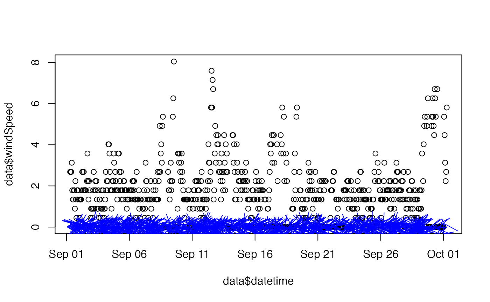

Add a multi-sided polygon to a plot.
addWindBarbs2( x, y, speed, dir, extraBarbLength = 0, barbSize = 1, barbColor = "blue", barbLocation = "zero", ... )
| x | vector of x-axis positions |
|---|---|
| y | vector of y-axis positions |
| speed | vector of wind speeds in knots |
| dir | wind directions in degrees clockwise from north |
| extraBarbLength | add length to barbs |
| barbSize | size of the barb s |
| barbColor | color of the barbs |
| barbLocation | starting location for barbs. Currently accepts 'point' or 'zero' |
| ... | additional arguments to be passed to |
https://commons.wikimedia.org/wiki/Wind_speed
# \donttest{ library(RAWSmet) data <- example_fw13SaddleMountain %>% raws_filterDate("2017-09-01", "2017-10-01") %>% raws_extractData() plot(data$datetime, data$windSpeed)addWindBarbs2(data$datetime, data$windSpeed, data$windSpeed, data$windDirection)# }